Télécharger l'image disque Windows
Comme tout installation standard de Windows, il nous faut un média d'installation soit physique ou virtuel (ISO). Le problème avec l'utilisation d'un média physique pour un système en «rolling release» c'est-à-dire en constante évolution comme Windows 10 c'est que il ne sera probablement pas à jour. Ce qui fait que les mise à jour post-installation peuvent devenir terriblement longues en plus de surcharger le nouveau système. Microsoft offre de télécharger gratuitement l'image disque ISO du média d'installation pour ses systèmes Windows 8, 10 ainsi que 11 fort probablement pour la raison ci-haut. Voici les liens de téléchargement officiels (site web de Microsoft) des différentes version de Windows.
- Windows 8 : https://www.microsoft.com/fr-ca/software-download/windows8ISO
- Windows 10 : https://www.microsoft.com/fr-ca/software-download/windows10
- Windows 11 : https://www.microsoft.com/fr-ca/software-download/windows11
Note : Pour Windows 10 ainsi que 11, seulement la dernière version est disponible au téléchargement.
La procédure suivante d'installation de Windows to Go est fait avec Windows 10.
Il faut donc aller télécharger l'image disque de Windows 10 à partir du site de Microsoft. Un moyen simple de se rendre au bon endroit est de passer par une recherche Google de «windows 10 iso».
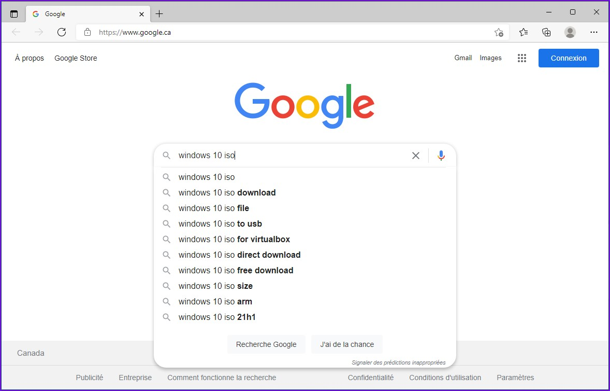Généralement, c'est le premier résultat.
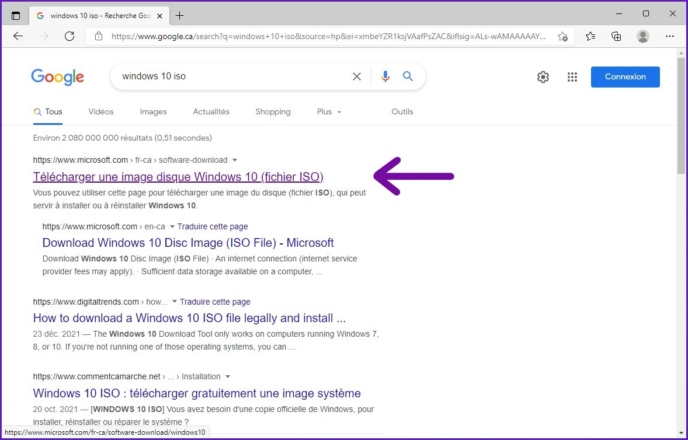Le lien sur lequel vous allez arriver dépendra du système d'exploitation à partir du quel vous accédez au site.
- Système Windows 7 et plus récent : https://www.microsoft.com/fr-ca/software-download/windows10
- Linux, Mac OS et autres : https://www.microsoft.com/fr-ca/software-download/windows10ISO
Si vous accédez aux liens ci-haut à partir d'un ordinateur avec Windows, la page vous proposera plutôt d'utiliser l'outil de mise à niveau Windows au lieu de l'image disque ISO. Cependant, il existe un petit truc sympa pour pouvoir quand même télécharger l'image disque sans devoir démarrer un autre système.
Ouvrez l'outil de développement web du navigateur Microsoft Edge.
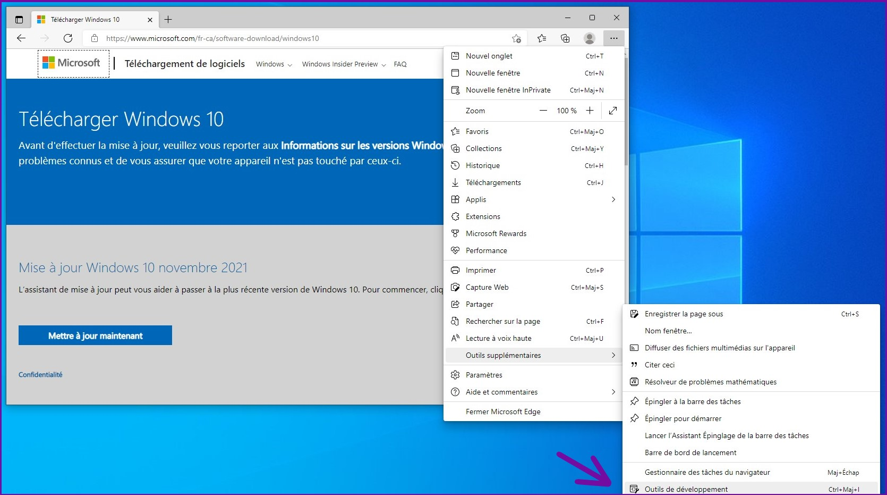Dans le menu des trois petits points en haut à droite, choisir "Émulation d'appareil".
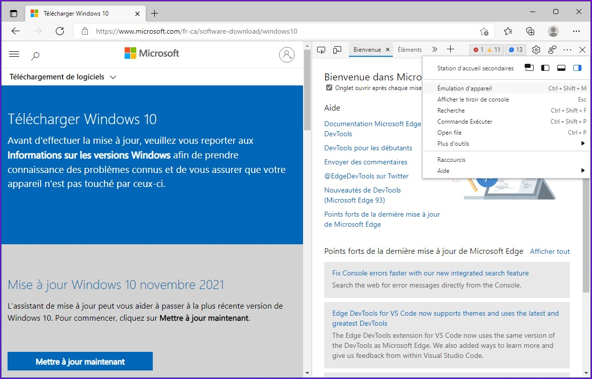Choisir "Tablette - 768px" en cliquant sur le rectangle gris le plus à droite.
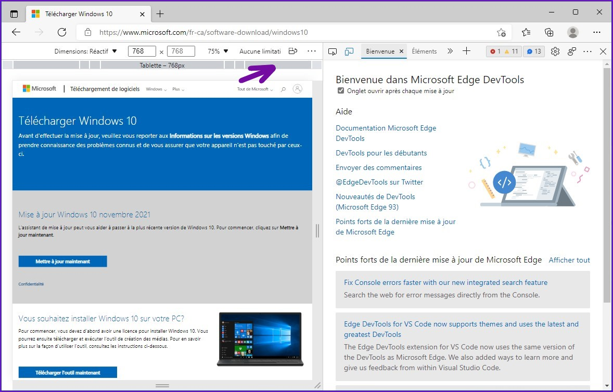Rafraîchir la page, et voilà! Vous arrivez directement sur la page de téléchargement de l'image disque de Windows 10.
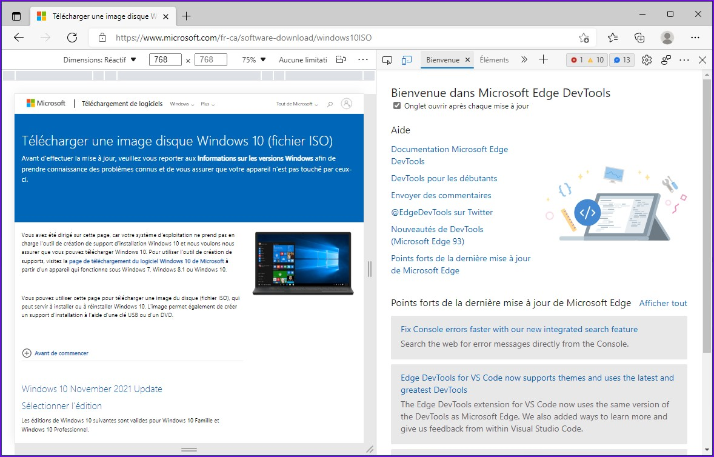Sélectionner l'édition de Windows 10 désirée. Généralement, il y aura un seul choix qui correspond à une image ISO comportant tous les éditions de Windows 10 (famille, professionel, éducation et autres).
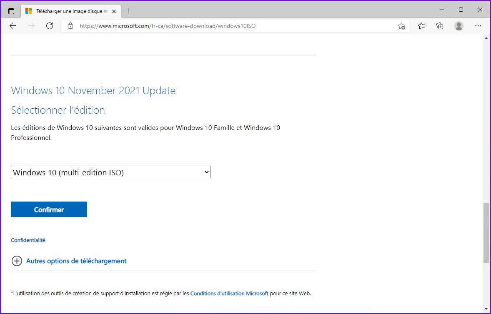Choisir ensuite la langue du produit, ici je choisis Français Canadien. Puis, cliquer sur le bouton «Confirmer».
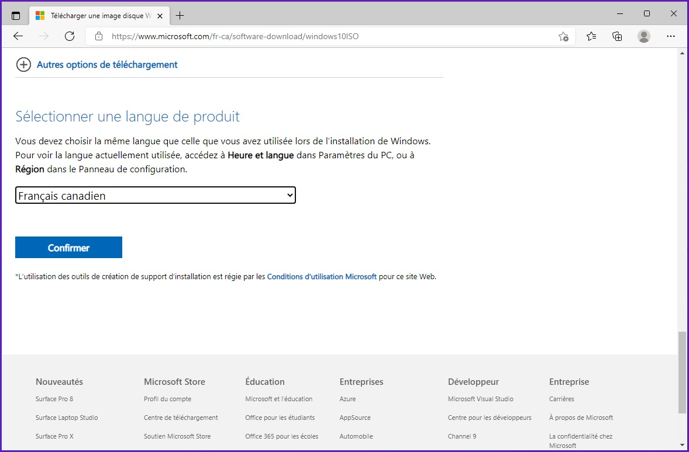Vous pouvez alors choisir entre la version 32-bit ou 64-bit du système d'exploitation en cliquant sur le bouton correspondant, puis le téléchargement va démarrer (un peu plus de 5 Go).
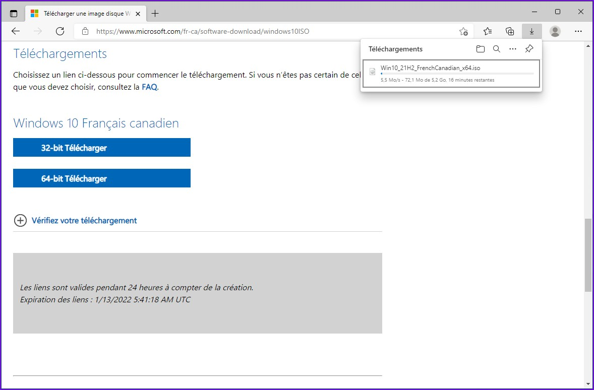Une fois le téléchargement terminé, il est important de vérifier l'intégrité du fichier image téléchargé pour s'assurer qu'il ne se soit pas corrompu lors du transfert entre les serveurs de Microsoft et votre ordinateur.
Les instructions pour effectuer la somme de contrôle (hashage) du fichier ISO sont fournies en bas des boutons de téléchargement.
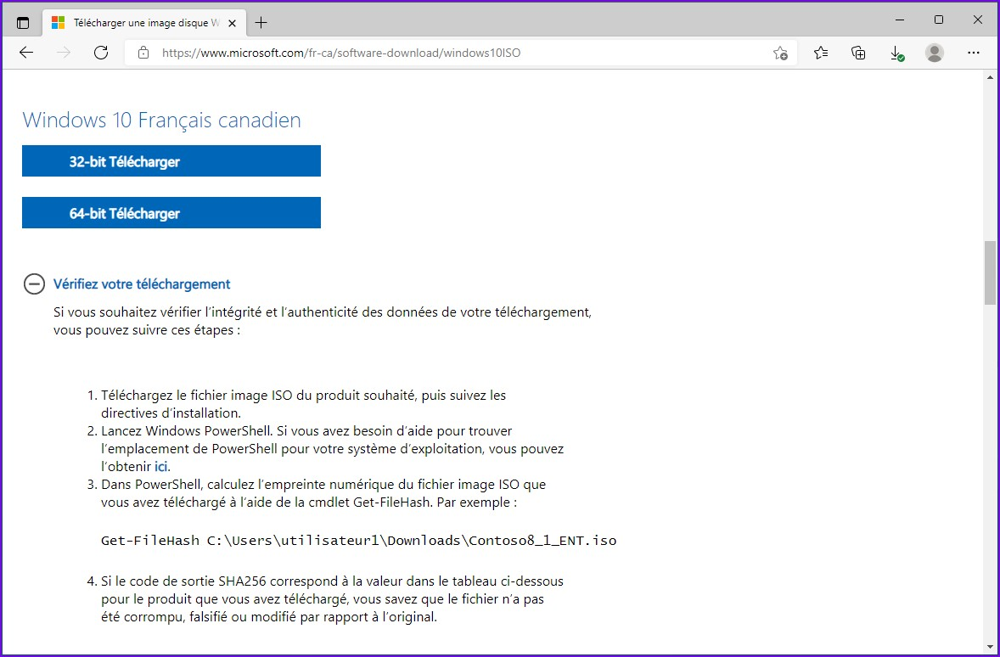Plus bas, vous aurez aussi le résultat attendu en SHA-256 pour chacune des versions 32-bit et 64-bit ainsi que dans toutes les langues supportées. Nous allons considérer Français Canadien en 64-bit.
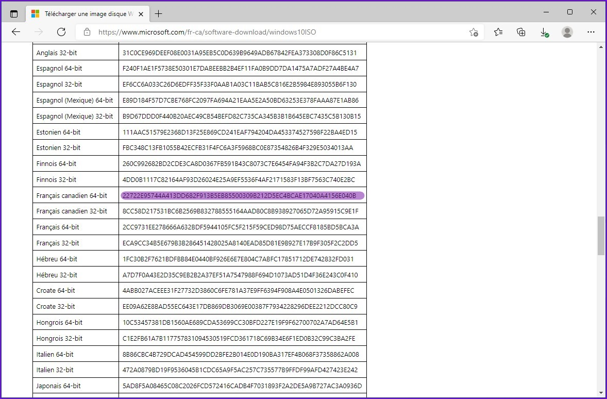Ouvrir l'interpréteur de commandes Windows PowerShell, puis entrer la commande suivante.
PS > Get-FileHash [Chemin du fichier image .iso]
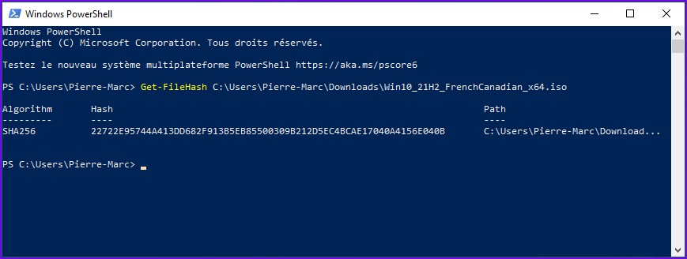Attendre le résultat, puis le comparer avec la valeur dans tableau suivant correspondant au fichier .iso téléchargé.
Le résultat en sortie de la commande Get-FileHash ainsi que la valeur du tableau doit être parfaitement identique. Si les deux valeurs sont différentes, le fichier image .iso est corrompu et vous devez le télécharger de nouveau ou bien vérifier votre matériel (disque dur, RAM).
Windows 10 intègre une fonctionalité de lecteur virtuel qui permet de monter des fichiers image .iso tout comme s'ils étaient gravés sur un disque et mis dans un lecteur optique physique. Faire un clique-droit sur l'image .iso de Windows téléchargée, puis «Monter».
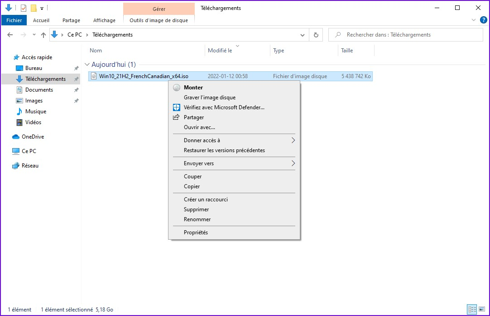Un nouveau lecteur de DVD apparaîtra dans le poste de travail de l'ordinateur et aura une lettre d'attribuée tout comme un lecteur physique. Dans mon cas, c'est la lettre E:/ qui a été choisie par le système. Le contenu est exactement le même que si vous gravez le fichier .iso et que vous placez le média dans un lecteur optique physique sur votre ordinateur.
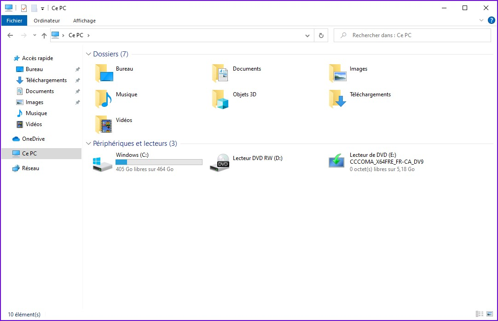Tout est en place concernant les données requises, nous sommes prêts à préparer le support externe pour l'installation manuelle du système Windows to Go.